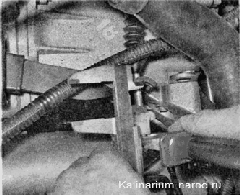
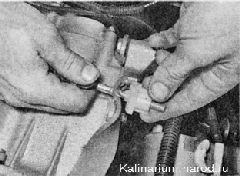

Выключение сцепления - регулировкаПривод выключения сцепления оборудован механизмом автоматической регулировки длины троса, поэтому в процессе эксплуатации автомобиля не требуется систематическая регулировка привода. Она выполняется после ремонта, связанного с разборкой сцепления или привода его выключения, и необходима для того, чтобы установить элементы механизма автоматической регулировки в исходное положение. Для выполнения работы потребуется штангенциркуль. Последовательность выполнения 1. Снимаем воздушный фильтр. 2. Потянув наконечник, максимально натягиваем трос сцепления и штангенциркулем измеряем расстояние между поводком и рычагом вилки. 3. Если расстояние не равно 27 мм, поворачиваем поводок по резьбе наконечника троса, добиваясь рекомендованного значения. 4. Нажимаем три-четыре раза на педаль сцепления и повторяем измерения. При необходимости повторяем регулировку. |